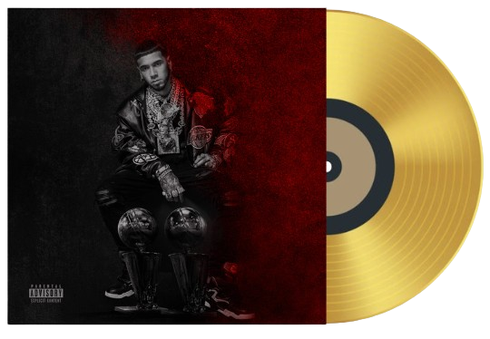

Las Leyendas Nunca Mueren 2
Historia del dsico
LLNM2 es el cuarto álbum de estudio en solitario del cantante puertorriqueño Anuel AA, y el quinto en general. El 9 de diciembre de 2022, Real Hasta la Muerte y Sony Music Latin lo lanzaron. El proyecto se lanzó inicialmente como un EP llamado Me Fui de Gira. Como segunda parte de su álbum de estudio Las Leyendas Nunca Mueren (2021), el EP se convirtió en un gran éxito.
En el disco se incluyen artistas como Omega, David Guetta, Jowell & Randy, De La Ghetto, Yailín La Más Viral, Bryant Myers, MVSIS, Kodak Black, Ñengo Flow, DaBaby, Treintisiete, Foreign Teck, Yovngchimi, Lil Durk, Nicky Jam, RobGz, Zion y Randy en colaboración.
Tour por el disco